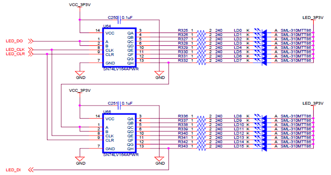

移位寄存器
Pre-release
目前“主板 LED 与七段数码管驱动模块”一节尚未完成
实验背景
移位寄存器
参考移位寄存器-维基百科。
移位寄存器(shift register)是一种在若干相同时钟脉冲下工作的以触发器级联为基础的器件，每个触发器的输出接在触发器链的下一级触发器的“数据”输入端，使得电路在每个时钟脉冲内依次向左或向右移动一个比特，并在输出端进行输出。
根据输入与输出特点，可有破坏性读出的串入串出、串入并出、并入串出等不同功能的移位寄存器。
串入串出，以 8 位右移移位寄存器为例，每次移位时，数据输入端移入最左边一位触发器的输出中，同时最右边一位触发器的输出移出并丢失。破坏性读出的含义是所有数据在被移位到最右边的位后就会丢失。
串入并出，可以将输入的串行数据以并行格式输出。在串行通信要求的几位数据完成输入后就可以在输出端的各位同时读出并行数据。
并入串出，可以接收外部并行数据，以最高级位触发器输出作为串行输出位，使用一位控制信号来选择并行读入或串行输出。在写/移位控制线保持低电平时，将并行输入的数据写入寄存器中；在写/移位控制线保持高电平时，进行移位。

本实验要求的右移移位寄存器功能为：能够并行输入与串行输入功能，使用一个控制信号选择并行输入或串入并出。串行/并行输入信号 \(\overline{Shift}/Load\) 为低位时进行串入串出，在每个时钟上升沿进行右移同时将串行输入的 shift_in 信号移入最左边的触发器中；串行/并行输入信号为高位时进行并行写入，将并行输入端口数据 par_in 写入触发器中。
74LV164A 芯片功能
仅作了解即可，本节内容参考 datasheet。
74LV164A 功能为 8 位串入并出移位寄存器。清零端 CLR 低电平有效，异步重置将触发器的值修改为 0；串入数据端 A, B 均为高位时输入 1，其他输入下表示输入 0。使用的触发器为正边沿触发。
74LS164 芯片功能与 74LV164A 基本相同，使用的技术不同导致电气特性不同，我们不需要关注。
主板 LED 与七段数码管
SWORD 板上 LED 与七段数码管均是由若干个 74LV164A 构成的串转并（串行输入、并行输出）模块控制，可以回想在使用板上 LED 与七段数码管时，我们会约束 s_out, s_clk, s_clr 等信号，这其实就是串转并模块需要的串行通信信号。
以 LED 为例，板上共 16 个 LED，需要 16 位信号进行控制，可以使用两个 74LV164A 组成 16 位右移移位寄存器来控制，在使用时，我们需要对 LED_CLK, LED_DO 等信号进行控制，在 LED_CLK 上升沿会发生移位并将 LED_DO 信号的值传入寄存器最低位。

移位寄存器的实现
关于实现
你可以参照实验背景中的原理图编写代码，可以使用 LabA 中的 FD 模块代码，你可能需要学习 generate for 来简化代码。
更推荐使用行为描述完成功能。对于在移位寄存器的应用中选择“主板 LED 与七段数码管驱动模块”的同学，你可能需要学习 parameter 相关内容，并使用参数设计移位寄存器模块。
参数设计与 generate
这里的内容主要参考了 chipverify 帖子给出的例子。
我们可以使用 generate 块来批量实例化或提供组合电路赋值，简单来说就是用代码写代码，比如在得到一个一位全加器后，希望通过八个一位级联方式得到八位全加器，我们可以用 generate for 得到八个一位全加器的实例，并给出相应连接：
8 位全加器代码
我们经常有拓展位宽的需求，而每次改变位宽都重写代码会增加很多不必要的工作，Verilog 提供了基本的参数使用，我们可以结合参数和 generate 来简化代码，比如实现一个可以任意改变位宽的行波加法器：
全加器代码
在进行实例化时，我们需要给出参数值，否则参数值将等于模块定义时的默认值。指定参数主要有两种方法，即 #() 与 defparam，这里仅用对全加器模块的 testbench 进行简单展示：
实例化方法
除了模块定义中的 parameter，Verilog 还提供了本地可用的参数 localparam，这部分内容请自行学习。
使用 Verilog 代码完成一个 8 位右移移位寄存器，要求接口与功能如下：
module ShiftReg8b(
input clk,
input shiftn_loadp,
input shift_in,
input [7:0] par_in,
output[7:0] Q
);
clk：时钟信号，在时钟上升沿对存储内容进行修改shiftn_loadp：控制信号，在低电平时进行移位操作，在高电平时进行并行数据读入shift_in：移位时移入的数据par_in：八位并行输入数据Q：并行输出数据
完成移位寄存器设计后，书写测试代码进行测试。
移位寄存器的应用
请注意
请从“跑马灯”和“主板 LED 与七段数码管驱动模块”中选择一个来完成，如果选择“主板 LED 与七段数码管驱动模块”则本实验将获得额外加分，加分仅能用到最后一次实验报告中，不会溢出。
跑马灯
设计一个简单的“跑马灯”应用：
SW[1:0]：调用 Lab7 中的CreateNumber模块，为两个 4 位寄存器regA, regB赋值，SW[0]每一次从闭到开（即信号上升沿）时regB自增一，SW[1]每一次从闭到开时regA自增一- Arduino 上七段数码管：使用七段数码管的某两位分别显示
regA, regB的值，请调用 Lab7 中的DisplayNumber模块 SW[2]：连接控制移位寄存器的shiftn_loadp端口。当SW[2]为1时进行并行输入，将{regA, regB}的值赋给移位寄存器；当SW[2]为0时进行串行输入的右移移位SW[3]：连接控制移位寄存器的shift_in_端口，作为串行输入- Arduino 上 LED：共 8 个 LED，依次表示移位寄存器的
Q[7]~Q[0]数据输出 - 关于时钟：请调用
clk_1s模块获得一个 1s 脉冲的时钟，并将其接到移位寄存器的clk端口
请自行书写代码和约束文件，下板后拍摄图片。